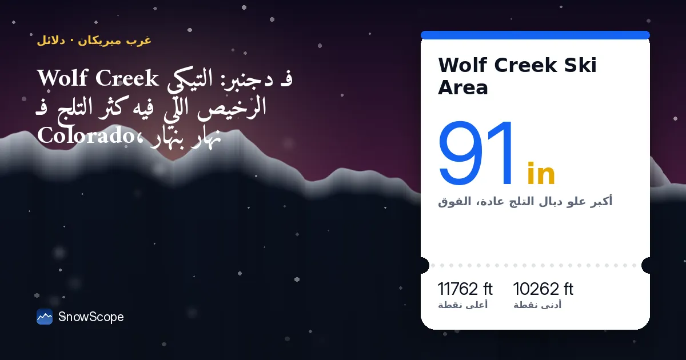

Wolf Creek فـ دجنبر: التيكي الرخيص اللي فيه كثر التلج فـ Colorado، نهار بنهار
محطة Wolf Creek كتجلس علا ديفايد القاري بين Pagosa Springs و South Fork. كتفرض سعر واحد طول السنة، كتنشر الأسعار قديم، وكتدي أعمق تلج فمنتصف ديسمبر من بين تلاتة محطات فكولورادو اللي شفنا. هنا شنو يبان ديسمبر عادي فكل علو، واش تحجز فاش تتجنب الأسعار الغالية.
شوف توقعات التلج مباشرة ديال Wolf Creek Ski Area فالتطبيق ديال SnowScopeالعلو ديال التلج، التنبيهات والخريطة 3D، فابور.
تلاتة علويات، تلاتة قصص ديال التلج
Wolf Creek كتمتد من 10,260 قدم (3,128 م) فالقاعدة لحد 11,760 قدم (3,585 م) فالقمة، فيها 11 ريمونتي وحوالي 31 كيلومتر (50 كم) ديال البيستات. العلو ديال التلج كيتبدل حسب الارتفاع. فيوم 15 ديسمبر عادي، القاعدة فيها 29 إنش (74 سم)، الجهة الوسطانية ف 11,010 قدم (3,356 م) فيها 34 إنش (87 سم)، والقمة توصل ل 36 إنش (92 سم). فليلة رأس السنة، الجهة الوسطانية كتوصل ل 46 إنش (118 سم) والقمة ل 50 إنش (127 سم).
الاعتمادية عالية لاكن ماشي مكملة. فيوم 15 ديسمبر، 72 بالمية من الشتوات اللي فاتو فيها 20 إنش (50 سم) أو أكثر فالجهة الوسطانية. الأسابيع اللي فيها تلج زوين، اللي SnowScope كتعرفهم بمعدل أسبوعي 20 إنش أو أكثر، كتظهر ف 59 بالمية من الشتوات اللي فاتو فالأسبوع الأول ديال ديسمبر لاكن ف 78 بالمية من الشتوات بأسبوع الميلاد. واخا العواصف تتجاوز جبال San Juan، كاع الممر كيشعر: ديسمبر دقيق، واحد من عشرة، يمكن يكون فيه غطا 5 إنش (12 سم) غير فيوم 15.

واش تجي واش كتعطيك
أسعار البيست ديال Wolf Creek ل 2026-27 محددة ومطبوعة: 96 دولار فالأيام العادية، 110 دولار فالأيام الغالية. فديسمبر، الأيام الغالية كتجري من 20 لحد 23 ديسمبر ومن 26 لحد 31 ديسمبر. معنى هذا بلي كتوفر 14 دولار فالبيست واحدة لو كنت كتسكي قبل 20 ديسمبر، أو فليلة الميلاد أو يوم الميلاد.
البيستات متعددة الأيام كتعطيك قيمة أحسن للرحلات الطويلة. بيست 2 أيام كتعطيك 192 دولار فالتواريخ العادية أو 220 دولار فالتواريخ الغالية. بيست 3 أيام هي 285 أو 327. أرخص ديسمبر إذن هي أي شي قبل 20، زيد اثنين الأيام ديال الميلاد نفسه.

واش كتقارن: Loveland و Ski Cooper
Loveland، على I-70 لغرب ديال Denver، كتفرض الأسعار الأولية ل البيست 60 دولار أونلاين لحد 13 ديسمبر، بعد هاك 159 دولار فالشباك من 14 ديسمبر والا بعد. الجهة الوسطانية ديالها كانت فيها 29 إنش (74 سم) فيوم 15 ديسمبر عادي، و 67 بالمية من الشتوات اللي فاتو فوق 20 إنش. Ski Cooper قرب Leadville هي الصفقة الرخيصة فالأيام لا الجمعة بـ 49 دولار، كتولي 99 دولار فنهايات الأسبوع والعطل، وكانت فيها 26 إنش (66 سم) فالجهة الوسطانية فيوم 15 ديسمبر عادي، و 70 بالمية من الشتوات اللي فاتو فوق 20 إنش.
Wolf Creek هي الأعمق من الثلاثة على الأرقام ديالنا فالجهة الوسطانية، والوحيدة اللي فيها سعر محدد طول الموسم. كتجلس أعلا وبعيدة أكثر من Denver: كتدفع أكثر فالطريق، لاكن الناس أقل والتلج أعمق هي الفايدة.
ديسمبر كان دافي أكثر فالشتوات اللي فاتو
الأول ديال ديسمبر كان عمقه أكثر من قبل. فأول 15 شتوة من السجل ديالنا، الجهة الوسطانية كانت فيها 55 إنش (140 سم) فيوم 15 ديسمبر عادي. فآخر 15 شتوة، هاك تنقص ل 24 إنش (60 سم)، وحصة الشتوات اللي فوق 20 إنش تنقصت من 87 بالمية ل 67 بالمية. الشتوة اللي فاتت كانت دقيقة بزاف فهاك اليوم: غير 9 إنش (23 سم) غطا.
الاتجاه واضح لاكن ماشي مطلق. منتصف ديسمبر وباقي الشهر كيبقاو عندهم حال ديال جيدة. ب 25 ديسمبر، العلو العادي هو 42 إنش (107 سم) فالجهة الوسطانية، وب ليلة رأس السنة توصل ل 46 إنش (118 سم). أحسن أسبوع فشتوة عادية هو آخر أسبوع ديال السنة، فيه العلوات حوالي 46 لحد 50 إنش فالجهة الوسطانية والقمة.
شنو اللي خصك تعرف قبل ما تجي
Wolf Creek Pass (US-160) عالي وحاد وماشي غفول. سياقة الشتا كتحتاج زنجيرات أو جر أربع عجل والحذر من الجو. شوف موقع Colorado Department of Transportation قبل ما تروح. الممر كيتقفل بزاف فالتلج الثقيل، والأحوال يمكن تتبدل بسرعة.
ماشي فيه أي فندق فالمحطة. أقرب مدن هي Pagosa Springs (25 كيلومتر / 40 كم ديال جنوب) و South Fork (15 كيلومتر / 24 كم ديال شمال). أكثر الزوار كيدوزو ليوم واحد. فارتفاع أكثر من 10,000 قدم، كول راسك فأول يوم واشرب ماء باش تتعود على الارتفاع. التلج ديال أول الموسم يمكن يكون خفيف؛ الصخور يمكن تكون قريبة تحت الغطا الخفيف.
نصايح للي كيتزلجو
- كسك قبل 20 ديسمبر باش تاخد السعر العادي 96 دولار بدل 110 دولار.
- احجز بيست 2 أو 3 أيام لو استطعت؛ السعر ليوم واحد كيتنقص ل 96 أو 95 دولار فاليوم فالتواريخ العادية، كتساوي أو أرخص من البيست الواحدة.
- خطط للجهة الوسطانية ف 11,010 قدم أو أعلا؛ القاعدة ف 10,260 قدم يمكن تكون خفيفة أول الموسم.
- جيب زنجيرات أو استعمل جر أربع عجل؛ شوف حالة CDOT والطريق قبل ما تسوق Wolf Creek Pass.
- خذ أول يوم براحتك ف هاك الارتفاع؛ اشرب ماء وتجنب الإرهاق باش تتعود على أكثر من 10,000 قدم.
على هاد الأرقام
العلو ديال التلج فالمحطات هو أكثر تلج فالجهة الفوقانية فالتاريخ المكتوب؛ هادو تقديرات لمنطقة، ماشي قياس فنقطة وحدة. التوقعات يمكن تتبدل. ديما شوف النشرة الرسمية ديال الانهيارات قبل ما تخرج من البيست.
النشرات الرسمية ديال الانهيارات: Colorado Avalanche Information Center
كيفاش تستاشهد بهاد المقال
للبحث، التعليم ولا الصحافة: الأرقام والرسومات تقدر تعاود تخدم بيهم بحرية تحت CC BY 4.0 مع هاد الاستشهاد.
SnowScope (2026), Wolf Creek فـ دجنبر: التيكي الرخيص اللي فيه كثر التلج فـ Colorado، نهار بنهار, https://snowscope.app/blog/ar/2026/11/wolf-creek-colorado-december-skiing-value.html, تشاف ف 2026-11-14
SnowScope (Atlas Labs). (2026, November 14). Wolf Creek فـ دجنبر: التيكي الرخيص اللي فيه كثر التلج فـ Colorado، نهار بنهار. SnowScope snow reports. https://snowscope.app/blog/ar/2026/11/wolf-creek-colorado-december-skiing-value.html
BibTeX
@misc{snowscope2026wolfcreekcoloradodecembe,
author = {{SnowScope (Atlas Labs)}},
title = {Wolf Creek فـ دجنبر: التيكي الرخيص اللي فيه كثر التلج فـ Colorado، نهار بنهار},
year = {2026},
month = nov,
howpublished = {\url{https://snowscope.app/blog/ar/2026/11/wolf-creek-colorado-december-skiing-value.html}},
note = {Published 2026-11-14 16:17 UTC; accessed 2026-11-14}
}· CC BY 4.0 · الطريقة، الداتا والأدوات →
Wolf Creek Ski Area: التلج والحرارة حسب العلو، هاد الشتا مقارنة مع اللي فاتت (الأدوات) →
تابع Wolf Creek Ski Area
فابور: ميساج ملي يجي التلج، والتوقعات كل صباح.